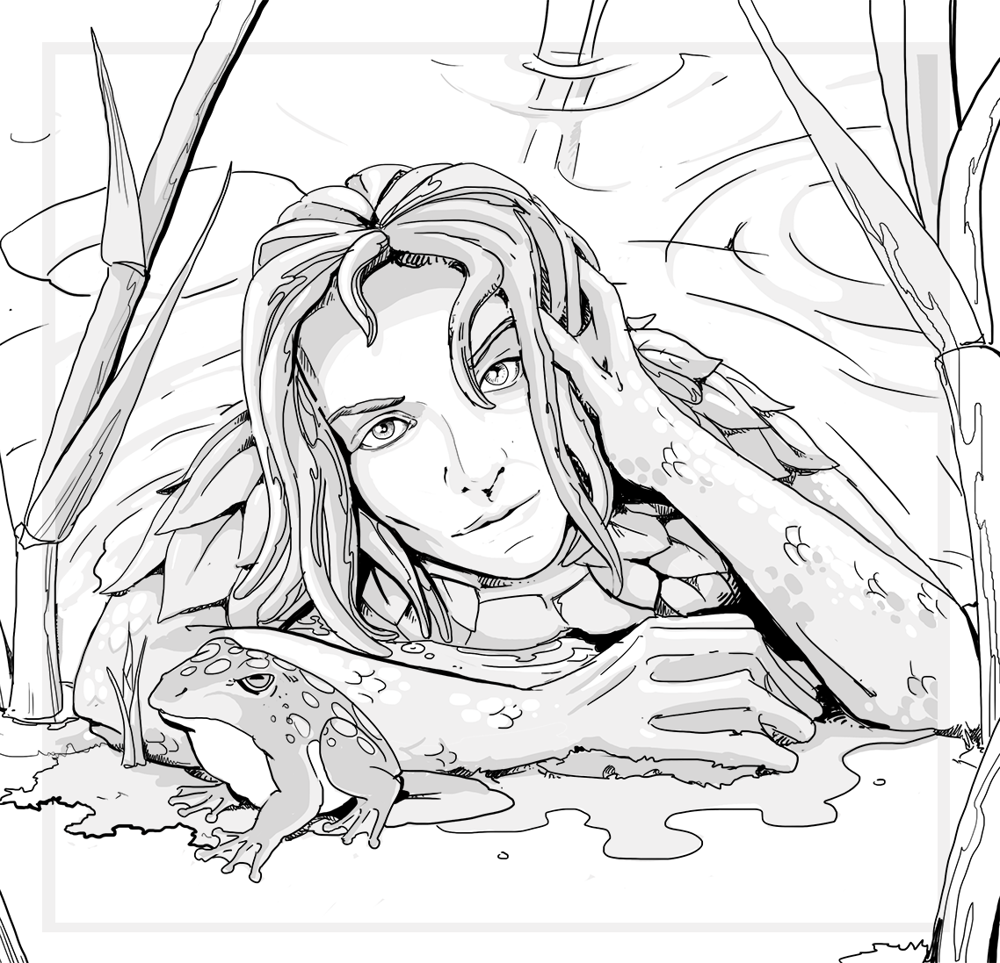

Complete Monster
by
Radaghast Kary
← Ningyo
↑Index↑
Nkosi →

Illustration by Mariana Ruiz Villarreal,
Public Domain
Nixie
is a
Sprite
5e
D&D 5 links
Nixie in 5e d20 SRD
3e
TN
D&D 3.0 facts
Abilities: Str 7, Dex 16, Con 11, Int 12, Wis 13, Cha 18
AC: 14 (+1 size, +3 Dex)
Advancement: 2-3 HD (Small)
Attacks: Dagger +4 melee; or light crossbow +4 ranged
CR: 1
Damage: Dagger 1d4-2; or light crossbow 1d8
HD: 1d6 (3)
Initiative: +7 (+3 Dex, +4 Improved Initiative)
Organization: Gang (2-4), band (6-11), or tribe (20-80)
Qualities: SR 16
Reach: 5 ft. by 5 ft./5 ft.
Saves: Fort +0, Ref +5, Will +3
Size: Small
Skills: All sprites receive a +2 racial bonus to Search, Spot, and Listen checks. *Nixies receive a +5 racial bonus to Hide checks when in the water.
Speed: 20 ft., swim 30 ft.
Terrain: Temperate aquatic
Treasure: No coins; 50% goods (metal or stone only); 50% items (no scrolls)
Type:
Fey
D&D 3.0 links
Nixie in 3.0 d20 SRD
D&D 3.5 links
Nixie in 3.5e d20 SRD
Pathfinder facts
CR: 1
Pathfinder links
Nixie in Pathfinder 1 SRD
{kind=link}